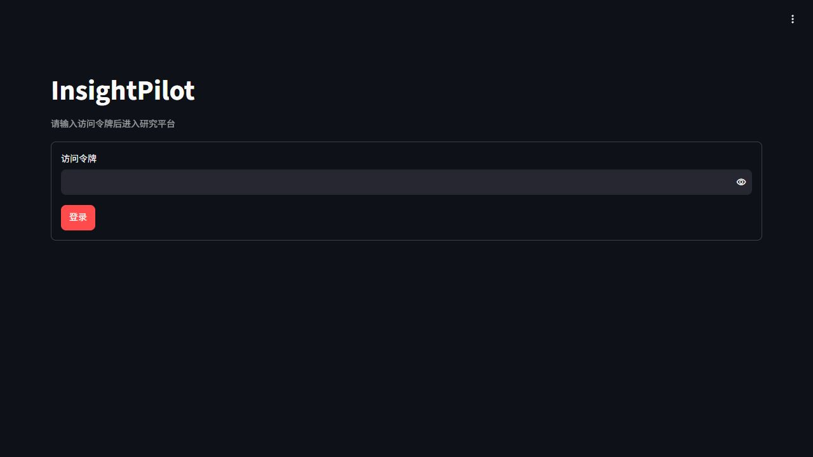
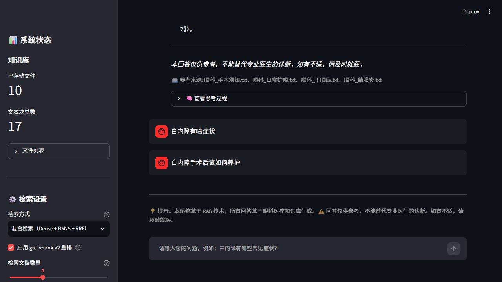
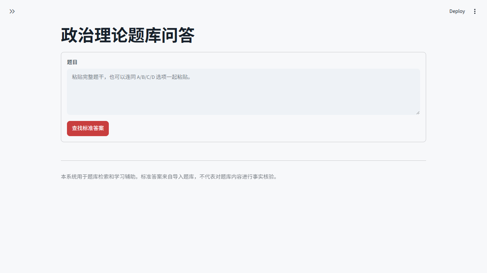

 已上线 IP InsightPilot 多智能体实时情报研究平台 Multi-Agent 实时检索 证据核验 从研究规划、网络检索到主张核验与报告生成，完整追踪每个 Agent 的执行过程。 打开 InsightPilot →
 已上线 EYE 慧眼医助 眼科医疗知识库 RAG 助手 Hybrid RAG BM25 + Dense Rerank 基于眼科知识库进行混合检索、重排与引用溯源，提供带参考来源的医疗知识问答。 打开慧眼医助 →
 已上线 QA 政治理论题库 4180 道原题结构化检索 精确匹配 FTS5 答案溯源 解析单选、多选与判断题，优先确定性返回题库答案；相似题存在歧义时由用户确认。 打开政治理论题库 →